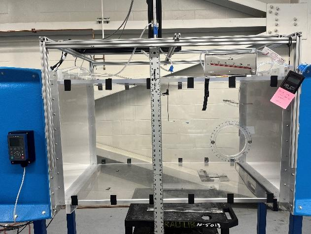
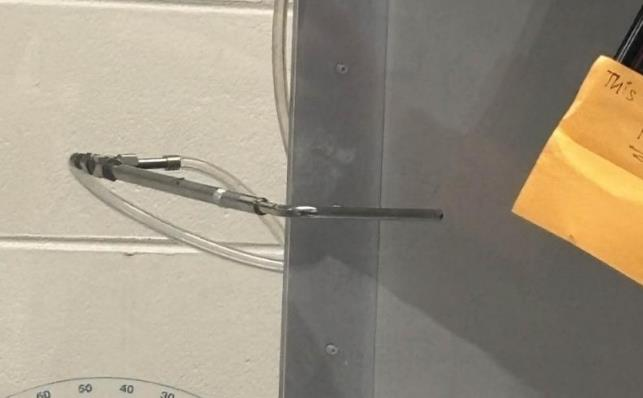

Experiment Overview
Before any aerodynamic test can be trusted, the wind tunnel itself must be understood. This lab established how the ERAU open-circuit wind tunnel behaves — mapping how fan speed translates to airflow velocity and how that airflow varies across the test section height. These baseline measurements are the foundation every subsequent experiment in the course depends on.
- Operate the ERAU open-circuit wind tunnel and its MATLAB-based data acquisition system
- Quantify how airspeed scales with fan frequency by sweeping 5–25 Hz
- Profile airspeed and turbulence intensity variation with probe height to assess flow uniformity
- Propagate measurement uncertainty for all recorded velocities using standard error methods


